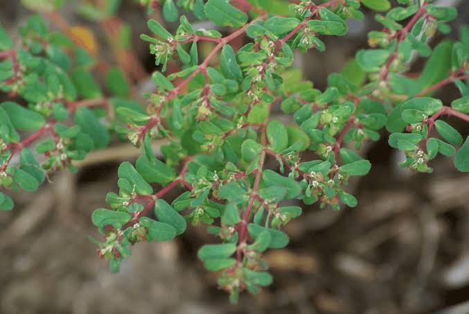

Plant Information & Weed Management

वैज्ञानिक नाम: यूफोर्बिया हिरटा (Euphorbia hirta)
कुल (फैमिली): यूफोर्बिएसी (Euphorbiaceae)
आकृति (Morphology): चौड़ी पत्ती वाला (Broad leaf)
जीवन चक्र: ग्रीष्मकालीन एकवर्षीय (Summer annual)
आवास (Habitat): सड़क के किनारे उगने वाला खरपतवार (Roadside weed)
• गर्मियों में गहरी जुताई: मई-जून में खेत की जुताई करें, जिससे इसके बीज तेज धूप से सूखकर नष्ट हो जाएं।
• निराई-गुड़ाई: पौधा छोटा होने पर या फूल आने से पहले ही इसे खुरपी या हाथ से उखाड़कर खेत से बाहर कर दें।
• मल्चिंग (ढकना): कतारों के बीच पुआल, घास या प्लास्टिक बिछाएं ताकि रोशनी न मिलने से इसके बीज न उग सकें।
• फसल का घनापन: सही दूरी और घनी बुआई करने से फसल की छाया के कारण यह खरपतवार दब जाता है।
• फसल बोने से पहले या बोते ही (अंकुरण से पहले):
○ Pendimethalin 30% EC (पेंडिमेथालिन) – 1 से 1.5 लीटर प्रति एकड़ (बुआई के 0–3 दिन के अंदर नमी में स्प्रे करें)।
• मक्का / ज्वार / चारा में:
○ Atrazine 50% WP (एट्राजीन) – 500–800 ग्राम प्रति एकड़ (बुआई के तुरंत बाद)।
• चौड़ी पत्ती वाली फसलों में (उगने के बाद):
○ Quizalofop-p-ethyl 5% EC (क्विजालोफॉप) या फसल-विषिष्ट चौड़ी पत्ती नाशक का प्रयोग कृषि विशेषज्ञ की सलाह से करें।
• खाली खेत / गैर-फसली क्षेत्र में:
○ Glyphosate 41% SL (ग्लाइफोसेट) का छिड़काव करें।